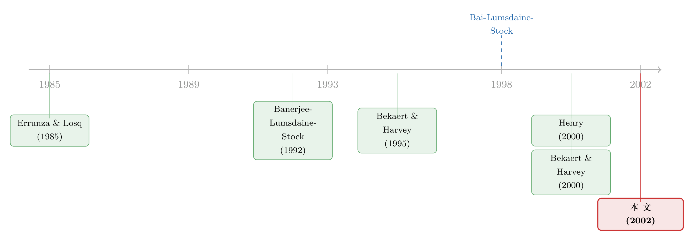

改革的公文盖了章，市场却还没「开门」——怎样给一国的金融开放找出真正的生效日
本文读的是 Bekaert, Harvey & Lumsdaine (2002, Journal of Financial Economics)：一纸看起来「全面」的开放法令，如果没能引来外资真金白银的流入，对一个新兴市场的运行其实没什么影响。作者不预设任何资产定价模型，只给一组金融与宏观时间序列设定一个简约式（reduced-form）VAR，再用一个内生的结构断点检验去「让数据自己说」一体化是哪天发生的。结论很扎心：这些被数据估出来的断点通常晚于官方公布的资本市场改革日——也就是说，「市场自由化（liberalization）」和「市场一体化（integration）」根本不是同一回事。
1 一个被公文骗了很多年的问题
先讲个看似无聊、却把整篇文章逼出来的常识。
一个新兴市场要「对外开放」，照例会有一连串动作：放松外汇管制、允许外国人持有本地股票、放开利润汇出、推动国企私有化、挂出第一只在卢森堡或纽约上市的国家基金（country fund）与存托凭证（ADR）。每一步都有明确的日期，写在官方公报里，盖着章。于是大家很自然地拿这些日期当作「这个市场被纳入世界资本市场的那一天」。
可问题是——盖章的那天，钱真的进来了吗？
作者在引言里把这层窗户纸捅破得很干脆：「看起来全面的监管变化，如果没能带来外国组合资金的流入，对一个发展中市场的运行就几乎没有影响。」换句话说，自由化是一个法律事件，一体化是一个经济事件，两者之间可能隔着好几年、甚至根本对不上。投资者可以早在政策出台前就通过 ADR、国家基金「绕道」进场（Foerster and Karolyi, 1999 就发现 ADR 的股价反应往往先于正式跨境挂牌）；反过来，一纸法令也可能因为缺乏可信度而长期无人理会。
于是一个自然的问题浮出来：既然官方日期靠不住，我们到底该怎么给「一体化」定一个日子？
这正是全文的题眼。注意：他们不是要解释一体化为什么发生，而是要回答一个更朴素、却是一切后续研究前提的问题——它哪天发生的？（用作者的话说，「the dating question is the subject of our research」。）只有先有了这个日期，你才谈得上去估一体化对成本、对增长、对波动的影响。
2 为什么不预设模型，而要「让数据自己断」
一个看上去更「高级」的做法，是写一个刻画动态一体化的资产定价模型。Bekaert and Harvey (1995) 就用过一个机制转换（regime-switching）框架，让市场在「分割」和「一体化」两种状态间渐变。
但作者对这条路有清醒的不满：这类模型「难以设定，而且经常被统计上拒绝」；更尴尬的是，即便市场看起来已经完美一体化，国际资产定价模型仍然解释不了投资者那种顽固的本国偏好（home bias）。把一个会被拒绝的结构模型当尺子，量出来的日期能信吗？
所以作者干脆退后一步，做了一个方法论上的关键取舍：
不对资产定价模型表态。 只假设：变量在一体化前后各自服从一个平稳过程，且能被一个向量自回归（vector autoregression, VAR）很好地描述。一体化就体现为这个 VAR 的参数在某个未知时点发生了结构断点（structural break）。
这个取舍有两重好处。其一，既然是简约式，就让所有参数都可以断——不只是均值，连自回归系数、方差都允许变化，这才对得起「市场运行方式整个变了」这件事。其二，也是更妙的一步：他们不止盯着收益率。收益率在新兴市场里噪声大得惊人，单看它很可能什么都看不出来。于是作者把视野撑开到一整组变量：净股权资本流、股息率（dividend yield）、市值/GDP 比、跨个股相关性、国家风险评级……这些变量里，股息率、市值/GDP 这类反映「永久性价格变化」的指标，理论上会比收益率更清楚地显出断点——因为一体化若真的压低了权益资本成本，价格会一次性跳升、预期收益会下台阶（Bekaert and Harvey, 2000；Henry, 2000a）。
到这里，思路其实已经很完整了：多变量、全参数、内生断点。但真正让这套方法「能用」的，是下面这个听起来反直觉的统计学事实。
3 方法的心脏：为什么「多塞几条序列」能把日期估得更准
这一节是全文的发动机，值得一步步拆。
3.1 最简单的情形：已知没有回归元
先看最干净的设定。令 \(y_t\) 为一个 \(n\times 1\) 向量，真实过程是 \(y_t = C + e_t\)，我们去估计
$$y_t = C_0 + C_1\,\mathbf{1}(t>k) + e_t$$
这里 \(\mathbf{1}(\cdot)\) 是示性函数，\(t>k\) 时取 1。\(C_1\) 就是「断点幅度」：如果某日期 \(k\) 真有结构断裂，\(C_1\neq 0\)；零假设是无断点（\(C_1=0\)）。
对一个给定的 \(k\)，检验「所有序列在 \(k\) 处同时无断点」可以构造一个 Wald 型统计量，其极限分布是 \(\chi^2(n)\)（因为 \(C_1\) 有 \(n\) 个元素）。
可我们并不知道 \(k\)。怎么办？很朴素：把每一个可能的日期都试一遍，在每个 \(k\) 上算出统计量 \(F_T(k)\)，取这一整条序列的最大值，作为估计的断点日。Bai, Lumsdaine and Stock（下称 BLS，1998）证明，这个「逐点统计量序列」的极限分布是
$$F^n(\tau) = \{\tau(1-\tau)\}^{-1}\,\lVert W(\tau) - \tau W(1)\rVert^2$$
其中 \(\tau = k/T\) 是断点占样本的比例，\(W(\cdot)\) 是 \(n\) 维独立标准布朗运动，\(\lVert\cdot\rVert\) 是欧氏范数。对它取最大，就得到所谓 Sup-Wald 检验；使 \(F_T(k)\) 最大的那个 \(k\) 就是估计的断点。直觉上，这就是在所有候选日期里，挑出「前后差异被放得最大」的那一天。
3.2 真正反直觉的一步：置信区间随序列数收缩
断点估出来了，但学术良心要求给个置信区间。BLS 的核心定理给出，置信区间可以写成（论文 Eq. (5)）
$$\hat{k} \pm a_{p/2}\,(\hat{C}_1'\,\hat{S}^{-1}\,\hat{C}_1)^{-1}$$
\(a_{p/2}\) 是某个极限分布 \(V^n\) 的分位数，\(\hat{S}\) 是误差协方差矩阵的估计。现在把它写到最透亮的一种特例：当各序列误差不相关、\(\hat{S}\) 为对角阵时，区间退化为下面这条——这也是整篇方法论里我最想让你盯住的一个公式：
为什么说它反直觉？请看求和符号里的每一项 \(\hat{C}_{1i}^2/\hat{S}_i\) 都严格为正。于是：
- 每多加一条在同一时点断裂的序列，分母就增大一截，区间只会变窄、绝不会变宽。 当各序列的断点幅度与方差大致相当时，区间宽度以 \(1/n\) 的速度收缩。
- 注意，这和我们熟悉的回归系数置信区间完全不同——后者是靠加观测值、以 \(1/\sqrt{n}\) 的速度收窄。这里的收缩不靠样本长度，靠的是横向叠加序列数。事实上，作者特别强调：对固定的断点幅度，置信区间根本不随样本量缩小。
- 还有更狠的：即便某些序列其实没有断点（\(C_{1i}=0\)），把它们塞进来也不会让区间变宽——大不了那一项贡献为零。
这就是整套方法的灵魂所在，也是作者反复强调「同时检验多条经济时间序列」的底气：在新兴市场这种样本又短、噪声又大的环境里，你没法靠「等更多数据」来把断点估准；但你可以靠「多看几个会在同一天一起变天的变量」把它估准。 一句话——精度来自序列的「合唱」，而非单条序列的「独白」。
3.3 推广到有平稳回归元的真实情形
真到了实证，模型当然不止一个常数。作者把它推广到带平稳回归元（自回归滞后项、以及「世界变量」这类外生工具）的一般 VAR（论文 Eq. (6)）：
$$y_t = (\Gamma_t'\otimes I_n)\gamma + \delta_t(k)(\Gamma_t'\otimes I_n)S'S\delta + e_t$$
这里 \(\delta_t(k)\) 在 \(t
别小看「让所有系数都断」这件事。这是第一篇真正实现「多变量 + 全系数」结构断点检验的论文，所以作者花了一整节做蒙特卡洛，确认这套检验在小样本里的水平（size）与功效（power）靠不靠谱。结果（论文表 1）显示：墨西哥收益率、不含世界工具、只测均值断点时，经验水平 0.063、功效只有 0.177；可一旦加入世界工具且允许全系数断裂，功效直接飙到 1.000（代价是水平略升到 0.105）；智利收益率的功效也从均值断点的情形提升到 0.725 一档。「全系数 + 多序列」确实比「只测均值」检出力强得多——这正是方法论那条 \(1/n\) 直觉在有限样本里的回响。
4 把统计断点翻译成经济故事：哥伦比亚的例子
光有一个会冒红灯的统计检验还不够。断点检验只会告诉你「这里断了」，它不会告诉你「为什么断」。要把一个冷冰冰的日期接回经济世界，得靠对每个国家逐一整理的事件年表——这部分功课，作者在 Bekaert and Harvey (1998) 里已经替 20 个国家做完了。
拿哥伦比亚当例子，年表密密麻麻：1991 年初放松外资企业利润汇回；1991 年 3 月再融资外债；1991 年 10 月，比索放开自由浮动，同时 Resolution 51 允许外国人投资本地股市至多 10%；1991 年 11 月，Resolution 52 干脆取消了这 10% 的上限；12 月电信业私有化；1992 年 4 月哥伦比亚投资公司（一只国家基金）在卢森堡挂牌；1993 年 2 月第一只 ADR 以 144A 私募形式发行；1994 年 11 月一家哥伦比亚公司的 ADR 登陆纽交所。
面对这样一团乱麻，结构断点检验能教我们什么？作者给了三层用法，层层递进：
- 第一层，拒绝「无断点」本身就有价值。 如果连断点都拒绝不了，那只能承认：过去十年轰轰烈烈的自由化，对这个市场的收益生成过程几乎没产生影响。这是个负面、却极其重要的结论。
- 第二层，断点的日期 + 置信区间，让我们能对号入座。 知道过程断了是「必要而不充分」的——还得看断在哪天：是某次资本市场自由化，还是某家大公司的私有化？渐进的小步改革，会让置信区间变宽吗？未必——如果市场预期到后续政策、提前一次性反应，渐进政策也能逼出离散而突然的价格跳变。这套方法允许逐国去分辨这两种情形。
- 第三层，因为估的是断点前后的简约式动态，我们能看清断点到底改变了哪些随机性质——波动、相关性、对世界因子的敏感度——再回头检验这些变化是否与一体化的理论一致。
而把这三层用法叠到 20 个国家上，最终浮出的那个反转，正是摘要里那句话：内生断点日期通常晚于官方自由化日期。 公文盖章在前，市场真正「开门」在后。法律上的自由化，远不等于经济上的一体化——这就是全篇要钉死的那一根钉子。
顺带一提，作者也很诚实地留了个尾巴：如果一体化过程会逆转（比如马来西亚 1997 年底事实上中止了货币可兑换），那么用「一次永久性断点」来刻画就有风险。他们的直觉是：只要机制足够持久，一次机制转换就近似于一次永久断点，检验仍有功效；但若恰好只有两三次频繁切换，方法可能就不太灵了。这是个诚实的 caveat，也是后续研究的口子。
5 文献脉络
把这篇论文放回它的坐标系，能更清楚地看到它在「补哪一块」。
最早的国际资产定价文献，关心的是「分割 vs. 一体化」的静态刻画：Errunza and Losq (1985) 的温和分割（mild segmentation）模型给出了分割世界里只有本地现金流波动才被定价、一体化后才转向与世界市场的协方差。这是一切的理论底座。
接着，一个自然的问题是：现实中的市场并非非黑即白地一步跨过去，而是渐变的。Bekaert and Harvey (1995) 用机制转换框架去建模时变的一体化程度，是「动态化」这一支的代表作。但正如前文所说，这类结构模型难设定、常被拒。

与此同时，计量经济学那边长出了另一条线：Banerjee, Lumsdaine and Stock (1992) 把递归与序贯的单位根、趋势断点检验做了系统梳理；到 Bai, Lumsdaine and Stock (1998)，多变量平稳/非平稳系统的断点检验成型，并给出了那个「置信区间随序列数收缩」的关键结果。本文真正的「巧劲」，就是把这把计量利器，第一次扛进了市场一体化的定日期问题里，且把它从「只测均值」推广到「全系数断裂」。
然后，在实证后果这一侧，Henry (2000a, 2000b) 与 Bekaert and Harvey (2000) 记录了一体化带来的价格跳升、预期收益与资本成本下降。本文恰好站在这些研究的上游：要谈一体化的后果，先得有可信的一体化日期——而这正是它提供的东西。（关于外资进场对长期实体经济与市场的影响，可参见《外资真是「蝗虫」吗？》；关于新兴市场里「数不清的零」如何量出流动性的价格，可参见《数不清的「零」》。）
6 评论与延伸（Q&A + 研究方向）
(a) 几个可能的疑问
Q：「自由化」和「一体化」到底差在哪？为什么非要分这么细？
自由化是政策/法律事件（一纸允许外资进场的法令），一体化是经济结果（外资真的进来、价格按世界因子重新定价）。本文最核心的发现就是二者在时间上对不齐，且一体化通常更晚。混用这两个概念，会让所有「测一体化后果」的研究把事件日期定错——这正是本文的价值所在。
Q：内生断点日期「晚于」官方日期，会不会只是因为外资进场本来就有时滞，而非自由化无效？
两种解释并不互斥，而恰恰是本文想区分的。检验先确认收益生成过程确实断了（否则说明自由化无效），再用逐国事件年表把断点对到具体事件上。「晚」本身就携带信息：它说明可信度、资金真正流入、价格充分反应需要时间，公文日期不能直接当一体化日期用。
Q：不预设资产定价模型，是优点还是偷懒？
是经过权衡的优点。结构化的国际资产定价模型「难设定、常被拒、还解释不了本国偏好」，拿一个会被拒的模型当尺子，估出的日期不可信。简约式 VAR + 内生断点，代价是放弃了对「为什么一体化」的结构解释，但换来对「何时一体化」这个更基础问题的稳健回答。
Q：那条「区间随序列数 1/n 收缩」的性质，是不是太好以至于不真实？
它有前提：这些序列得在同一时点断裂，且断点幅度方向一致。塞进一条根本不在那天断的序列不会害你（大不了贡献为零），但如果你错误地假设多条序列「共同断裂」、而它们其实各断各的，那「人为收紧」的区间就会误导你。所以本文很谨慎地按「时机」给变量分组——价格类变量可在预期时即跳变，外资持有量却只能在政策允许后才变化。
Q：如果一体化会逆转（如亚洲危机后的资本管制回潮），这套方法还成立吗？
作者自己承认这是软肋。若过程更像频繁的机制切换而非一次永久断点，方法功效会下降；恰好两三次切换是最糟的情形。他们的补救是诉诸机制的持久性，并建议用 Bai and Perron (1998) 的多重断点检验做稳健性——但这与「多变量框架」的优势目前还无法兼得。
Q：为什么要扩到股息率、市值/GDP，而不是只看收益率？
因为新兴市场收益率噪声极大，单看它常常什么都测不出。理论上，一体化压低资本成本会带来永久性价格变化，这在股息率、市值/GDP 这类「水平型」变量上显现得比在「差分型」的收益率上更干净。把会一起变天的变量凑成合唱团，正是 §3 那条精度逻辑的实证落地。
(b) 几个可能的研究问题与提案
-
把这套「内生定日期」搬到公司债与信用市场的开放上。 【经济故事】新兴市场债市对外开放（如纳入摩根大通 GBI-EM、放开 QFII 额度）同样存在「政策日 ≠ 资金真正进场日」的错位，且债市价格对资本成本的永久性变化可能比股市更敏感。 【可行性】中。需要逐国债市开放年表 + 外资持债占比、利差、流动性指标构成多变量 VAR；识别策略可直接照搬 BLS 内生断点。难点是新兴债市高频数据短、缺口多。
-
用断点的「官方—内生」时滞长度，去预测一体化的实体后果。 【经济故事】如果「时滞越长 = 改革可信度越低」，那么时滞本身应能预测后续增长、投资、资本成本下降的幅度。这把本文的「日期」变成一个右手边变量。 【可行性】中高。20 国时滞已可由本文方法产出，宏观结果数据（Henry, 2000a 等已用）现成；横截面回归即可，样本小是主要约束。
-
把「一体化会逆转」正面做掉：多重断点 × 多变量。 【经济故事】亚洲危机、2010 年代的资本管制回潮，都提示一体化是可逆的。能同时享受「多重断点」与「多变量精度」的检验，是本文明确指出却尚未填上的空白。 【可行性】低到中。这是计量方法论的硬骨头（作者自己说「迄今没有方法能兼得二者」），更适合做方法论贡献而非纯实证。
-
外资持有人结构与一体化日期的交互。 【经济故事】同样一纸开放令，引来的是长期养老金还是热钱套利者，决定了价格反应是「永久跳升」还是「短暂脉冲」，进而影响断点的清晰度与置信区间宽度。 【可行性】中。需要按投资者类型拆分的跨境持仓数据（如 TIC、各国登记数据）；识别可用本文断点 + 持有人结构做交叉。（与这一方向相关的微观证据，可参见《外资能买的股票，为什么更「抖」？》与《外资真有「信息劣势」吗？》。）
我的判断
贡献。 这篇文章最漂亮的地方，不在某个惊人的实证数字，而在一个概念上的澄清加一件方法上的趁手工具：它把「自由化」和「一体化」彻底拆开，并把 BLS 的多变量内生断点检验——尤其是「置信区间靠横向叠加序列、而非纵向加长样本来收窄」这一性质——第一次用在了正确的问题上。对一个样本又短、噪声又大的研究对象，这个 \(1/n\) 的视角几乎是量身定做。它是后续无数「一体化后果」研究无声的地基。
对识别的担忧。 我最不踏实的有两点。其一，「共同断点」是把双刃剑：精度全靠各序列真的在同一天断裂，一旦把不同步的序列硬凑成合唱团，那条漂亮的收窄性质就会反过来骗你给出过窄、过自信的区间——而「哪些变量该归一组」终究带有研究者的判断。其二，一次性永久断点的设定，对「可逆的一体化」天然不友好，作者自己也承认在「恰好两三次切换」时方法会失灵。把统计断点对到具体经济事件，仍依赖逐国年表那一步人工叙事，这既是它接地气的优点，也是它主观性的来源。
后续想看到什么。 我最想看到的，是把这套方法搬到信用市场：债券利差对资本成本的永久性变化也许比股票收益更干净，而新兴债市开放的「政策日 ≠ 资金日」错位同样严重。再往前一步，如果能用「官方—内生」时滞的长短去预测一体化的实体后果，那本文产出的这些日期，就从一个被解释的对象，变成了一把能去解释世界的尺子。
参考文献
- Bekaert, G., Harvey, C.R., Lumsdaine, R.L. (2002). Dating the integration of world equity markets. Journal of Financial Economics 65(2), 203–247.
- Bai, J., Lumsdaine, R.L., Stock, J.H. (1998). Testing for and dating breaks in stationary and nonstationary multivariate time series. Review of Economic Studies 65(3), 395–432.
- Banerjee, A., Lumsdaine, R.L., Stock, J.H. (1992). Recursive and sequential tests of the unit root and trend-break hypotheses: theory and international evidence. Journal of Business and Economic Statistics 10(3), 271–287.
- Bai, J., Perron, P. (1998). Estimating and testing linear models with multiple structural changes. Econometrica 66(1), 47–78.
- Bekaert, G., Harvey, C.R. (1995). Time-varying world market integration. Journal of Finance 50(2), 403–444.
- Bekaert, G., Harvey, C.R. (1998). Capital flows and the behavior of emerging market equity returns. NBER Working Paper 6669.
- Bekaert, G., Harvey, C.R. (2000). Foreign speculators and emerging equity markets. Journal of Finance 55(2), 565–613.
- Errunza, V.R., Losq, E. (1985). International asset pricing under mild segmentation: theory and test. Journal of Finance 40(1), 105–124.
- Foerster, S.R., Karolyi, G.A. (1999). The effects of market segmentation and illiquidity on asset prices: evidence from foreign stocks listing in the U.S. Journal of Finance 54(3), 981–1013.
- Henry, P.B. (2000a). Equity prices, stock market liberalization, and investment. Journal of Financial Economics 58(1–2), 301–334.
- Henry, P.B. (2000b). Stock market liberalization, economic reform, and emerging market equity prices. Journal of Finance 55(2), 529–564.